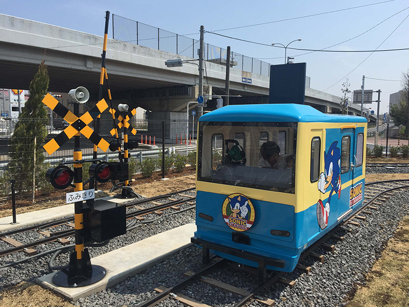
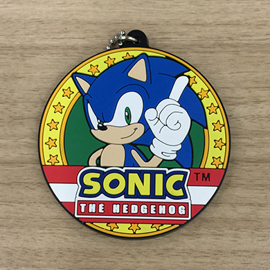

セガソニック鉄道 ラバーストラップつき乗車切符を発売中！


『セガ ソニック鉄道』は「ららぽーと富士見」の屋外広場に設置されている1/10サイズのミニチュアトレインのアトラクションです。ソニックデザインのトレインを自分で運転することができます。3月19日から「ラバーストラップつき乗車切符」を発売開始しました。ラバーストラップはセガソニック鉄道のヘッドマークの形をした、ここでしか入手できない数量限定の商品となっています。この機会に、ぜひご体験下さい。
| 商品名 | セガソニック鉄道 ラバーストラップつき乗車切符 |
|---|---|
| 価格 | ラバーストラップつき乗車切符：小学生未満1,000円 小学生以上1,200円 乗車切符のみ：小学生未満200円 小学生以上400円 |
| 営業時間 | 10：00~17:00（天候、季節により変動します） |
| 公式サイト | http://tempo.sega.jp/am/sonic-tetsudo/ |
| 公式ツイッター | https://twitter.com/sega_sonictrain |